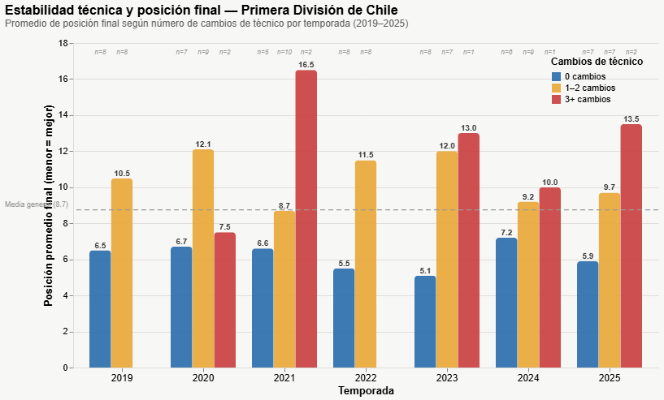

Estabilidad v/s rendimiento
Los equipos que más dinero invierten en fichajes no siempre obtienen los mejores resultados.
La estabilidad (mantener a los mismos jugadores y no cambiar de DT) es un factor más determinante para el éxito que el valor de mercado del plantel. En esta investigación, el rango de tiempo considerado son las temporadas 2019 a la 2025.
El 72% de equipos que mantienen a un solo DT termina en los primeros tres puestos
El análisis de las últimas siete temporadas de la primera división del fútbol chileno (2019-2025), revela que los equipos que logran mantener a un sólo director técnico durante la temporada son los que mejor rendimiento tienen. El 72% de los equipos que terminaron en los tres puestos mantuvieron a un sólo DT durante el año. Por ejemplo, los planteles de la Universidad Católica que fueron campeones el año 2019 y 2020, no cambiaron de técnico durante la temporada.
Por otra parte, en base al análisis se observa que los equipos que más rotación de directores técnicos tienen no suelen terminar en una buena posición en la tabla final. En el periodo analizado, un equipo que tiene un total de 3 o más técnicos en una temporada, tiene un 85.7% de probabilidades de terminar en la mitad inferior de la tabla (puesto 9 al 16). Por ejemplo, los equipos que descendieron de categoría entre el 2020 y el 2025 (se excluye el 2019 porque no hubo descensos), tuvieron en promedio 2 cambios de técnico, promediando 3 DTs por temporada. En ese contexto, destaca el caso de Santiago Wanderers 2021, que terminó último en la tabla de posiciones y tuvo 5 directores técnicos durante el año.
En promedio, los equipos que no cambiaron de técnico durante la temporada terminaron en la sexta posición del torneo, mientras que los equipos que cambiaron una o dos veces de DT, o sea, tuvieron dos o tres técnicos durante el año, en promedio finalizaron en la posición número 11.
Estabilidad y posición final
El siguiente gráfico muestra el promedio de la posición final en la que terminaron los equipos y el número de cambios de DTs que tuvieron durante esa temporada:

Gráfico 1: Promedio de posición final según el número de cambios de técnico por temporada en la Primera División de Chile (2019–2025). Una posición menor indica un mejor resultado.